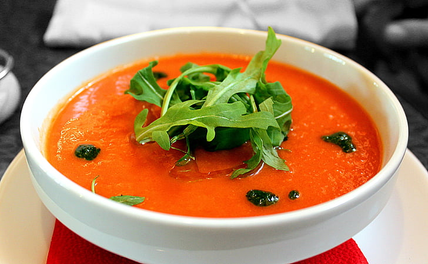

Soup

The roasting step for this roasted cherry tomato soup may sound time-consuming, but it is not. This easy, delicious soup will still be on the table in 30 minutes, and most of that time is hands-off.
Ingredients
- Cherry tomato
- Peeled garlic
- Green Onion
- Seasonings
- Carrots
- olive oil
Steps
- Preheat oven
- Spread veg in a pan and toss in olive oil
- Fill blender with the veg and blend until liquid
- Pour 1/4 cup of water into soup
- Ladle into bowls